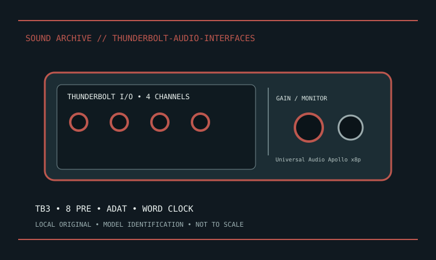

[ INDIVIDUAL MODEL // SOUND HARDWARE ]
Universal Audio Apollo x8p
Thunderbolt 3 rack interface: 8 Unison combo mic preamps, analog line/monitor/headphone I/O, ADAT, S/PDIF and word clock; 24-bit/192 kHz.

Model-specific specifications
| Exact model / scope | Universal Audio Apollo x8p. Save UAD firmware, clock/routing and phantom state. Confirm x8p (not x8) and supported host/cable. |
|---|---|
| Bus / host | Thunderbolt host connection; verify controller, cable, generation and OS in the manufacturer compatibility guide. |
| Documented functions / connectors | Thunderbolt 3 rack interface: 8 Unison combo mic preamps, analog line/monitor/headphone I/O, ADAT, S/PDIF and word clock; 24-bit/192 kHz. |
| Conversion / formats | Conversion rates and digital channel capacity depend on model, rate and optical format. |
| Drivers / OS | Use the linked model-specific manufacturer support/manual page. Driver and supported OS availability depends on release; no undocumented OS compatibility is asserted. |
| Power / microphone | Use the documented mic preamp phantom controls; line-only products have no phantom. |
Compatibility & preservation
Save UAD firmware, clock/routing and phantom state. Confirm x8p (not x8) and supported host/cable.
- Photograph model/revision, connectors and included accessories before service.
- Retain the matching manual, driver/firmware and known-working host/routing configuration.
- Follow documented signal levels, connector pinout and power requirements; physical fit alone is not compatibility.
Manufacturer sources
- Manufacturer product information — Universal Audio Apollo x8pProduct/model source; match the exact revision and board.
- Manufacturer support and documentationOfficial model documentation, drivers and OS compatibility information.